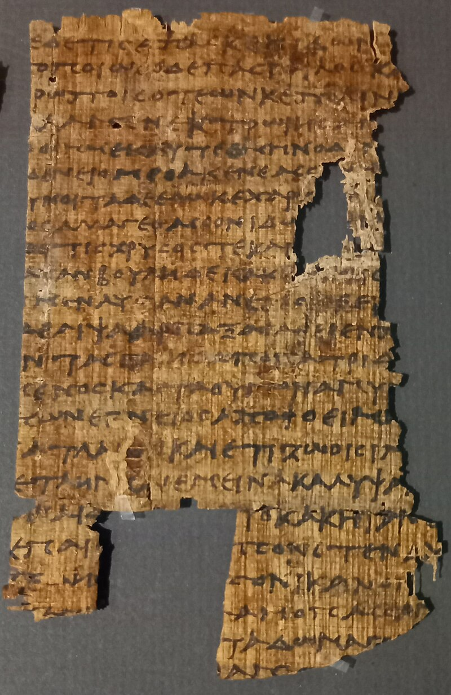
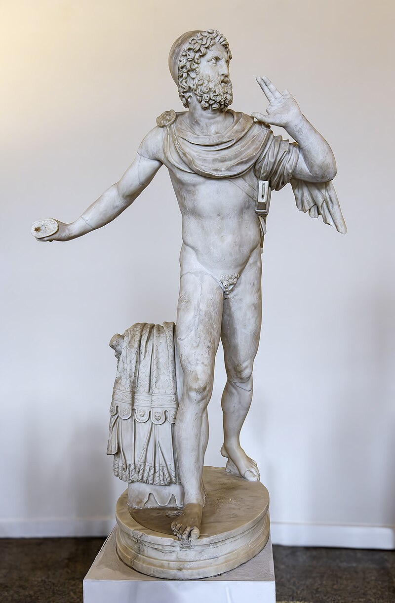

Difference with The Odyssey

Epic: El musical, al ser una adaptacion de La Odisea, un poema centenario, se tomo ciertas libertades creativas a la hora de contar la historia, humanizar a los personajes u incluso omitiendo hechos; esto con el fin de mantener un ritmo ágil y centrarse en los personajes principales. Escenas largas o complejas, como la visita al Hades o los Lotófagos, se eliminaron para que la trama sea clara y comprensible, mientras que otras se transformaron para incluir humor, canciones dinámicas y elementos teatrales. Estas decisiones permiten que el musical sea entretenido, emotivo y visualmente impactante, aunque sacrifica algunos detalles del texto original.
- Odiseo: en la Odisea es astuto, calculador y a veces ambiguo moralmente; en EPIC se enfatiza su heroísmo y humor, haciéndolo más carismático y accesible para la audiencia moderna. Su ingenio se convierte en espectáculo cómico o musical, y sus errores se suavizan para mantener simpatía.
- Penélope: en la Odisea es paciente y estratégica, pero también melancólica; en EPIC, su carácter se vuelve más activo y audaz, tomando decisiones directamente y cantando sobre ellas, como en The Challenge, reforzando su protagonismo.
- Telémaco: en la Odisea es tímido y aprende a crecer gradualmente; en EPIC, su desarrollo es más rápido y emotivo, con canciones que expresan sus dudas y su evolución de forma clara para la audiencia.
- Circe: en Homero es enigmática y peligrosa, transformando a los hombres en cerdos; en EPIC se suaviza su lado amenazante y se enfatiza su carácter seductor y dramático, con canciones que la humanizan y la hacen más expresiva musicalmente.
- Atenea: en la Odisea es sabia, distante y estratégica, guiando a Odiseo de manera casi invisible; en EPIC se vuelve más visible y activa, con diálogos y canciones que la muestran como consejera cercana y hasta divertida, haciendo que su intervención sea más directa y teatral.

- Adaptación al formato musical: Muchas escenas de la Odisea son extensas y narrativas, con largos pasajes de diálogo o descripción que no funcionan bien en canciones. Para mantener el ritmo del musical, ciertos episodios se redujeron o se omitieron.
- Los Lestrigones y otras islas menores: Odiseo enfrenta múltiples islas y criaturas peligrosas, cada una con pruebas que desarrollan su astucia y liderazgo. EPIC elimina o condensa estos episodios para no alargar demasiado el musical y mantener un ritmo dinámico de canciones y escenas.
- Reinterpretación de relaciones: la dinámica entre Odiseo, Penélope y Telémaco es más cercana y emocionalmente explícita; se acentúa el afecto, la tensión familiar y la complicidad, mientras que en la Odisea la interacción es más sutil y matizada.
- Viaje al Hades: en la Odisea, Odiseo consulta con Tiresias y otras almas en el inframundo, aprendiendo lecciones profundas sobre la vida, la muerte y su destino. EPIC reduce esta interacción a momentos clave, como la canción No Longer You, para transmitir la esencia de la profecía sin recrear toda la compleja narrativa.
- Guerra de Troya y el caballo de Troya: el poema épico dedica extensos pasajes a la guerra y la estrategia del caballo de Troya. En EPIC, esto se menciona de manera breve o simbólica, enfocándose más en el regreso de Odiseo y su conflicto con los dioses, evitando escenas de batalla largas que serían difíciles de musicalizar.
- Poseidon como antagonista: En la Odisea, Poseidón actúa como antagonista desde la distancia, influyendo en el viaje de Odiseo a través de tempestades, obstáculos y castigos por haber cegado a su hijo, Polifemo. Mientras que en Epic, se toma la libertad creativa de mostrar interacciones más directas y teatrales entre Poseidón y Odiseo, especialmente en escenas musicales como Ruthlessness, para hacer el conflicto más visual, emocionante y comprensible para la audiencia del musical.
★★★★★